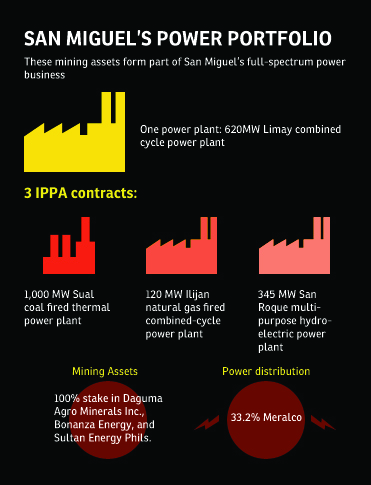

Digging deeper for growth
As the faint strains of Edward Elgars classical graduation march drifted through the Clermont Room of Discovery Suites in Pasig, San Miguel Integrated Sales (SMIS) Training and Development Manager Joey de Jesus couldnt help but beam with great pride at his major accomplishment. After weeks of rigorous classes, he had finally graduated with a Management
Development degree from the San Miguel Pure Foods Co. Inc. (SMPFC) Universitys School of Management.
The experience was in equal parts demanding, strenuous, and frustrating, but nothing beats the natural high that you get from completing a daunting task, says De Jesus. This is one triumph he will always carry with him throughout his professional life.
The first run of the Management Development Program Course (MDP), which lasted four months, was participated in by the (SMPFC) OpCom members, middle managers, and high-potential employees.
Harvard-John Clements, a partnership between Harvard Business Publishing and John Clements Consultants, Inc. and a learning provider that specializes in honing and developing leadership and management skills, was chosen to help design and facilitate the course.
A student of the Abridged Management Program; Magnolia Inc. General Manager Regi Baylosis shares that he has never been more serious before about studying and felt that it was because the program was purposive, deliberate, and engaging. A ringing endorsement indeed from someone who has knownonly excellence in his academic life. Baylosis graduated Summa Cum Laude from the St. Louis University in Baguio City where he completed a B.S Marketing course.
Moreover, Baylosis believes that the program serves as a good venue for members of the Food Groups OpCom to move beyond thinking about their own areas of responsibility, and see the organization as a whole. We learned so much, not only from the sessions themselves, but also from each other, which in turn has driven us to seek more synergies amongst our businesses.
The SMPFC University was launched in August 2010 to serve as an internal institution for higher learning. It offers courses in management, technical operations, and personal effectiveness.
The idea of creating a higher learning program for our employees, where they can really sharpen their skills, broaden their knowledge, and eventually become the best in their fields, is part of the companys larger goal of major transformation, says SMPFC President and concurrent University regent Francisco S. Alejo III. The objective is really to arm the employees with the right tools in their pursuit of professional excellence.